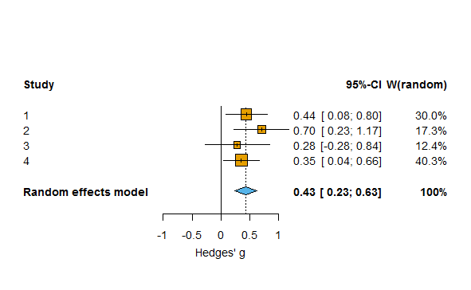

5.4 Confidence Intervals
As Kelley and Rausch Kelley & Rausch (2006Kelley, K., & Rausch, J. R. (2006). Sample size planning for the standardized mean difference: Accuracy in parameter estimation via narrow confidence intervals. Psychological Methods, 11(4), 363.) explain, it is misleading to report point estimates without illustrating the uncertainty surrounding that estimate. Pretending as if the outcome of your statistical test is the final and exact answer is misleading, and you should always communicate the remaining uncertainty when you report statistical analyses. Here, we will examine this question in detail by learning how to think about, calculate, and report confidence intervals around estimates from samples.
5.4.1 Population vs. Samples
In statistics, we differentiate between the population and the sample. The population is everyone you are interested in, such as all people in the world, elderly who are depressed, or people who buy innovative products. Your sample is everyone you were able to measure from the population you are interested in. We similarly distinguish between a parameter and a statistic. A parameter is a characteristic of the population, while a statistic is a characteristic of a sample. Sometimes, you have data about your entire population. For example, we have measured the height of all the people who have ever walked on the moon. We can calculate the average height of these twelve individuals, and so we know the true parameter. We do not need inferential statistics. However, we do not know the average height of all people who have ever walked on the earth. Therefore, we need to estimate this parameter, using a statistic based on a sample.
In addition to the goal of observing a significant difference in a study (for example a p < .05), researchers can have the goal of estimating a parameter accurately (regardless of whether this estimate differs from the null-hypothesis or not). Confidence intervals can be calculated around any statistic in your data.
Confidence intervals are a statement about the percentage of confidence intervals that contain the true parameter value. This behavior of confidence intervals is nicely visualized on this website by Kristoffer Magnusson: http://rpsychologist.com/d3/CI/. We see blue dots that represent means from a sample, fall around a red vertical line, which represents the true value of the parameter in the population. We see the blue dots do not always fall exactly on the red line. This illustrates the important fact that there is always variation in samples.
The horizontal lines around the blue dots are the confidence intervals. By default, the visualization shows 95% confidence intervals. Most of the lines are black, but some are red. In fact, in the long run, 95% of the horizontal bars will be black, and 5% will be red.
We can now see what is meant by the sentence “Confidence intervals are a statement about the percentage of confidence intervals that contain the true parameter value“. For 95% of the samples, the red line (the population parameter) is contained within the 95% confidence interval around the sample mean.
As we will see when we turn to the formulas for confidence intervals, sample means and their confidence intervals depend on the sample size. The larger the sample size, the smaller the confidence intervals.
5.4.2 The relation between confidence intervals and p-values
There is a direct relationship between the CI of an effect size and the statistical difference from 0 of the effect. For example, if an effect is statistically different (p < 0.05) from 0 in a two-sided t-test with an alpha of .05, the 95% CI for the mean difference between two groups will never include zero. Confidence intervals are usually said to be more informative than p-values, because they do not only provide information about the statistical difference from 0 of an effect but they also communicate the precision of the effect size estimate. If 0 is not contained in the confidence interval around the mean difference, the effect is statistically different from zero – it might be a false positive, but the p-value will be smaller than 0.05.
Confidence intervals are often used in forest plots that communicate the results from a meta-analysis. In the plot below, we see 4 rows. Each row shows the effect size estimate from one study (in Hedges’ g). For example, study 1 yielded an effect size estimate of 0.44, with a confidence interval around the effect size from 0.08 to 0.8. The horizontal black line, similarly to the visualization we played around with before, is the width of the confidence interval. When it does not touch the effect size 0 (indicated by a black vertical line) the effect is statistically significant.

We can see, based on the fact that the confidence intervals do not overlap with 0, that studies 1, 2, and 4 were statistically significant.The light blue diamond is the meta-analytic effect size. Instead of using a black horizontal line, the upper limit and lower limit of the confidence interval are indicated by the left and right points of the diamond. The center of the diamond is the meta-analytic effect size estimate. A meta-analysis calculates the effect size by combining and weighing all studies. The confidence interval for a meta-analytic effect size estimate is always narrower than that for a single study, because of the combined sample size of all studies included in the meta-analysis.
5.4.3 The Standard Error and 95% Confidence Intervals
To calculate a confidence interval, we need the standard error. The standard error (SE) estimates the variability between sample means that would be obtained after taking several measurements from the same population. It is easy to confuse it with the standard deviation, which is the degree to which individuals within the sample differ from the sample mean. Formally, statisticians distinguish between σ and \(\widehat{\sigma}\), where the hat means the value is estimated from a sample, and the lack of a hat means it is the population value – but I’ll leave out the hat, even when I’ll mostly talk about estimated values based on a sample in the formulas below. Mathematically (where σ is the standard deviation),
Standard Error (SE) = σ/√n
The standard error of the sample will tend to zero with increasing sample size, because the estimate of the population mean will become more and more accurate. The standard deviation of the sample will become more and more similar to the population standard deviation as the sample size increases, but it will not become smaller. Where the standard deviation is a statistic that is descriptive of your sample, the standard error describes bounds on a random sampling process.
The Standard Error is used to construct confidence intervals (CI) around sample estimates, such as the mean, or differences between means, or whatever statistics you might be interested in. To calculate a confidence interval around a mean (indicated by the Greek letter mu: μ), we use the t distribution with the corresponding degrees of freedom (df : in a one-sample t-test, the degrees of freedom are n-1):
μ±tdf, 1-(α/2) × SE
With a 95% confidence interval, the α = 0.05, and thus the critical t-value for the degrees of freedom for 1- α /2, or the 0.975th quantile is calculated. Remember that a t-distribution has slightly thicker tails than a Z-distribution. Where the 0.975th quantile for a Z-distribution is 1.96, the value for a t-distribution with for example df = 19 is 2.093. This value is multiplied by the standard error, and added (for the upper limit of the confidence interval) or subtracted (for the lower limit of the confidence interval) from the mean.
5.4.4 Overlapping Confidence Intervals
Confidence intervals are often used in plots. In the example below, you see three estimates (the dots), surrounded by three lines (the 95% confidence intervals). The left two dots (X and Y) represent the means of the independent groups X and Y on a scale from 0 to 7 (see the axis from 0-7 on the left side of the plot). The dotted lines between the two confidence intervals visualize the overlap between the confidence intervals around the means. The two confidence intervals around means in columns X and Y are commonly shown in a figure in a scientific article. The third dot, slightly larger, is the difference between X and Y, and slightly thicker line visualizes the confidence interval of the difference. The difference score uses the axis on the right (from -3 to 3). In the plot below, the mean of group X is 3.3, the mean of group Y is 5.1, and the difference is 1.8.
The width of the confidence interval depends on the sample size, the confidence interval level, and the standard error, as you have seen before. In the plot on the left below, the sample size was 50 people in each group, while on the right, the sample size was 500 people in each group. The difference in the width of the confidence intervals is substantial. It is also clear that accurate estimates require large samples.


As mentioned earlier, when a 95% confidence interval does not contain 0, the effect is statistically different from 0. For a t-test, this is true for the confidence interval around an effect size, or around a mean difference, because the mean difference, or the standardized mean difference (the effect size) are directly related to the significance test. In the plots above, the mean difference and the 95% confidence interval around it are visible on the right of each plot. When this 95% confidence interval does not contain 0, the t-test is significant at an alpha of 0.05. But the two confidence intervals around the individual means can be more difficult to interpret in relation to whether the means differ enough to be statistically significant. Open CI_Overlap.R, and run the code. It will generate plots like the one above. Run the entire script as often as you want (notice the variability in the p-values due to the relatively low power in the test!), to answer the following question. The p-value in the plot will tell you if the difference is statistically significant, and what the p-value is.
Q6: How much do two 95% confidence intervals around individual means from independent groups overlap when the effect is only just statistically significant (p ≈ 0.05) at an alpha of 0.05?
When the 95% confidence interval around one mean does not contain the mean of the other group, the groups differ significantly from each other.
When the 95% confidence interval around one mean does not overlap with the 95% confidence interval of the mean of the other group, the groups differ significantly from each other.
When the overlap between two confidence intervals is approximately half of one side of the confidence interval, the groups differ significantly from each other.
There is no relationship between the overlap of the 95% confidence intervals around two independent means, and the p-value for the difference between these groups.
Note that this visual overlap rule can only be used when the comparison is made between independent groups, not between dependent groups! The 95% confidence interval around effect sizes is therefore typically more easily interpretable in relation to the significance of a test.
5.4.5 Prediction Intervals
Even though 95% of future confidence intervals will contain the true parameter, a 95% confidence interval will not contain 95% of future individual observations. Sometimes, researchers want to predict the interval within which a single value will fall. This is called the prediction interval. It is always much wider than a confidence interval. The reason is that individual observations can vary substantially, but means of future samples (which fall within a normal confidence interval 95% of the time) will vary much less.
Open the file CI_mean.R. Run the entire script. This scripts will simulate a single sample with a population mean of 100 and standard deviation of 15, and calculate the mean (M) and standard deviation (sd) of the sample. The black dotted line illustrates the true mean. 95% of the CI should contain the true mean (100).

The orange background illustrates the 95% confidence interval, calculated as we did manually before. The lighter yellow background illustrates the 95% prediction interval (PI). To calculate it, we need a slightly different formula for the standard error, namely:
Standard Error (SE) = σ*√(1+1/N)
When we rewrite the formula used for the confidence interval to σ*√(1/N), we see the difference between a confidence interval and the prediction interval is in the “1+” which always leads to wider intervals. Prediction intervals are wider, because they are constructed so that they will contain a future single value 95% of the time.
5.4.6 Capture Percentages
One thing people find difficult to understand is why a 95% confidence interval does not provide us with the interval where 95% of future means will fall. The % of means that falls within a single confidence interval is called the capture percentage. A 95% confidence interval is only a 95% capture percentage when the statistic (such as an effect size) you observe in a single sample happens to be exactly the same as the true parameter. This situation is illustrated in the picture below. The observed effect size (dot) falls exactly on the true effect size (vertical dotted line). In this case, and only in this case, 95% of future means will fall within this 95% confidence interval.

However, you can’t know whether your observed effect size happens to be exactly the same as the population effect size. When this is not the case (and it is almost never exactly the case) less than 95% of future effect sizes will fall within the CI from your current sample. The right side of the figure illustrates this. Let’s assume we observed an effect size much lower to the true effect size. We know that effect sizes from the sample are randomly distributed around the true effect size. Very often, we should find effect size estimates in our sample that fall outside the 95% confidence interval of the single sample we happen to have observed. So, the percentage of future means that fall within a single confidence interval depends upon which single confidence interval you happened to observe! In the long run, a 95% CI has an 83.4% capture probability (Cumming & Maillardet, 2006Cumming, G., & Maillardet, R. (2006). Confidence intervals and replication: Where will the next mean fall? Psychological Methods, 11(3), 217–227. https://doi.org/10.1037/1082-989X.11.3.217).
Let’s experience this through simulation. The simulation in the R script generates a large number of additional samples, after the initial one that was plotted. The simulation returns the number of CI that contains the mean (which should be 95% in the long run). The simulation also returns the % of means from future studies that fall within the 95% of the original study, or the capture percentage. It differs from (and is often lower, but sometimes higher, than) the confidence interval.
Q8: Run the simulations multiple times. Look at the output you will get in the R console. For example: “95.077 % of the 95% confidence intervals contained the true mean” and “The capture percentage for the plotted study, or the % of values within the observed confidence interval from 88.17208 to 103.1506 is: 82.377 %”. While running the simulations multiple times, look at the confidence interval around the sample mean, and relate this to the capture percentage. Which statement is true?
The farther the sample mean is from the true population mean, the lower the capture percentage.
The farther the sample mean is from the true population mean, the higher the capture percentage.
Q9: Simulations in R are randomly generated, but you can make a specific simulation reproducible by setting the seed of the random generation process. Copy-paste “set.seed(1000)” to the first line of the R script, and run the simulation. The sample mean should be 94. What is the capture percentage? (Don’t forget to remove the set.seed command if you want to generate more random simulations!).
95%
42.1%
84.3%
89.2%
Capture percentages are rarely directly used to make statistical inferences. The main reason we discuss them here is really to prevent the common misunderstanding that 95% of future means fall within a single confidence interval: Capture percentages clearly show that is not true. Prediction intervals are also rarely used in psychology, but are more common in data science.
In this assignment you have learned why it is important to provide a measure of the uncertainty of your estimates. We have discussed the correct interpretation of confidence intervals, the meaning of prediction intervals, and the difference between a confidence interval and a capture percentage.
Page built: 2020-08-15